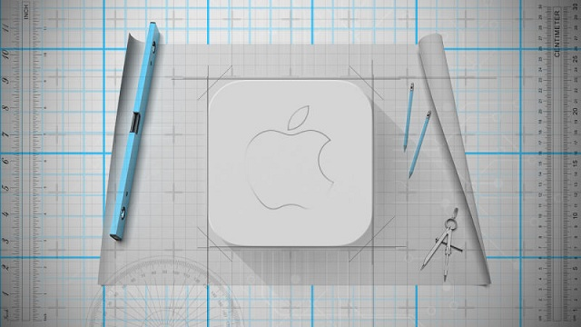
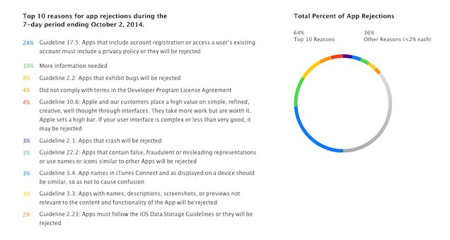
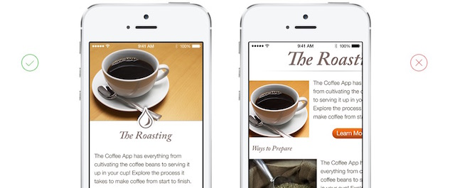
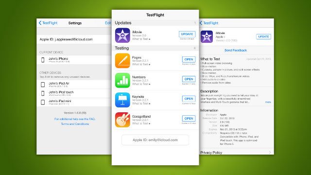

22 tháng 04, 2021
Bài viết được dịch từ trang web Lifehacker

Tôi muốn lập trình ứng dụng iOS. Tôi nên bắt đầu từ đâu?
Gửi Lifehacker,
Tôi đã có một chút kiến thức nền tảng trong lập trình, giờ tôi muốn tạo một ứng dụng iOS. Tôi chỉ không
chắc chắn về nơi tôi nên bắt đầu hoặc những công cụ nào mà tôi cần. Tôi nên bắt đầu từ đâu?
Trân trọng,
App Store Amateur
ASA thân mến,
Học lập trình iOS là một quá trình theo hai hướng. Nếu bạn chưa biết lập trình chút nào cả, thì bạn có
thể tìm thấy rất nhiều nguồn tài nguyên ở đây. Nếu bạn đã
thành thạo việc lập trình, thì bạn sẽ cần phải
làm quen với các công cụ phát triển của Apple và các hướng dẫn của họ. Apple nổi tiếng là rất khắt khe
trong việc xét duyệt các ứng dụng, vì vậy sẽ là rất hữu ích để bạn biết được điều gì nên và không nên
làm trước khi bắt đầu.
Chúng tôi sẽ không hướng dẫn toàn bộ quá trình để làm một ứng dụng, vì như vậy sẽ có rất nhiều thông tin để đăng trong bài viết này. Tuy nhiên, chúng tôi sẽ giúp bạn thiết lập môi trường lập trình, chỉ cho bạn về những tài liệu hướng dẫn của Apple, và cung cấp cho bạn một số nguồn tài nguyên giúp bạn tìm hiểu về các ngôn ngữ lập trình khác nhau để lập trình cho iOS.
Xcode, Swift, và iOS SDK
IDE (Integrated Development Environment) của Apple cho cả Mac và iOS là Xcode. Nó hoàn toàn miễn phí và bạn có thể tải nó từ trang web của Apple. Xcode có giao diện đồ hoạ, và bạn sẽ sử dụng nó để viết các ứng dụng. Đi kèm với nó là tất cả mọi thứ bạn cần để lập trình cho iOS với ngôn ngữ lập trình Swift của Apple. Nó cũng chỉ có sẵn cho Mac, vì vậy nếu bạn có kế hoạch làm các ứng dụng iOS thì bạn sẽ cần phải chạy OS X.
Hiện nay Apple đang khuyến khích bạn phát triển ứng dụng bằng ngôn ngữ Swift, nhưng bạn cũng có thể lập trình iOS bằng một số ngôn ngữ khác nhau, bao gồm cả Objective-C. Việc quyết định sử dụng ngôn ngữ nào là do lựa chọn của bạn, nhưng dưới đây là một vài hướng dẫn, và những tutorial để giúp bạn bắt đầu:
Những nguồn tài nguyên trên sẽ giúp bạn thiết lập các công cụ phát triển và cung cấp cho bạn một số kiến thức về cách làm việc trên iOS.
Hướng dẫn App Store Review của Apple

Không có gì là bí mật trong tài liệu hướng dẫn App Store Review Guidelines của Apple cả, nó được đánh giá là cực kỳ chi tiết. Apple có một quan điểm rất rõ ràng về những ứng dụng nào mà họ sẽ cho phép tải lên kho ứng dụng của họ, vì vậy sẽ rất hữu ích để bạn tìm hiểu về các quy tắc của họ trước khi cố gắng tạo ra ứng dụng. Nếu không, bạn có thể dành nhiều thời gian của mình để làm ra một ứng dụng mà Apple sẽ không cho phép tải lên App Store.
Khi bạn hoàn thành ứng dụng của mình, bạn sẽ submit nó lên App Store và nó sẽ được xem xét (review) dựa trên nội dung, thiết kế (sẽ đề cập chi tiết trong phần tiếp theo), và các chi tiết kỹ thuật. Vì vậy, bạn hãy truy cập trang hướng dẫn đánh giá (Review Guidelines) và đọc kỹ nó. Apple cũng liệt kê ra một danh sách các lý do phổ biến mà ứng dụng bị từ chối . Thông thường, đó là do ứng dụng bị crash, các liên kết bị hỏng, quảng cáo, hoặc thông tin không đầy đủ. Apple cũng được biết đến trong việc chặn các ứng dụng liên quan đến nội dung xxx hoặc chính trị.
Tương tự như vậy, nhiều API của Apple cũng đã thiết lập những hướng dẫn đánh giá của riêng chúng. Vì vậy, nếu bạn đang định tích hợp ứng dụng của mình với HealthKit hoặc Apple Pay, thì sẽ rất tốt để bạn nắm được những hướng dẫn này. Và dưới đây là các đường link đến chúng:
Luôn luôn nên nhớ rằng Apple có xu hướng rất bảo thủ trong quá trình xem xét ứng dụng của họ. Rất có thể, nếu bạn làm một ứng dụng gì đó có nội dung hơi phản cảm thì nó sẽ bị từ chối, vì vậy hãy cẩn thận trước khi bạn bắt đầu làm ứng dụng của mình.
Hướng dẫn thiết kế của Apple

Ngoài các hướng dẫn đánh giá của Apple, họ cũng có một tập hướng dẫn về cách thiết kế giao diện ứng dụng. Apple muốn tất cả các ứng dụng trong kho của họ có một sự nhất quán, và trong khi điều này không có nghĩa đó là những thiết kế tốt, nhưng nó làm cho các ứng dụng đều sử dụng các thành phần UI cơ bản giống nhau.
Để có thể nắm rõ hơn về điều này, bạn hãy truy cập vào trang Human Interface Guidelines của Apple. Ở đây, bạn sẽ tìm thấy những điều cơ bản về những gì họ đang tìm kiếm trong cả thiết kế ứng dụng và icon. Họ cũng đưa ra một danh sách những điều nên làm và không nên làm (Do's and Don'ts), đây là bản tóm tắt những phần quan trọng để bạn có thể dễ dàng bắt đầu với nó.
Rất may, Apple không để cho bạn gặp khó khăn trong việc làm thế nào để tạo ra một ứng dụng có thiết kế tốt. Dưới đây là một vài nguồn tài nguyên để giúp bạn thiết kế ra một cái gì đó có giá trị:
Bạn cũng có thể tìm thấy nhiều nguồn tài nguyên trực tuyến để giúp cải thiện khả năng thiết kế của mình, hoặc xem hướng dẫn của chúng tôi.
Đăng ký GitHub và TestFlight

Trừ khi bạn là một "thiên tài", bạn có thể sẽ không muốn tạo ra ứng dụng của mình ở dạng thử nghiệm. Còn nếu không, sẽ là rất tốt khi có những người khác xem xét code và dùng thử phiên bản beta ứng dụng của bạn.
GitHub là công cụ để kiểm soát phiên bản và là môi trường làm việc cộng tác rất tốt. Khi bạn đăng ký GitHub, sẽ vô cùng dễ dàng liên kết Xcode vào nó để tất cả mọi thứ bạn làm sẽ được lưu và truy cập bởi những thành viên khác trong nhóm của bạn. Nếu bạn cần một chút giúp đỡ để thiết lập GitHub, thì hướng dẫn này của họ sẽ cung cấp cho bạn các bước rất chi tiết.
Tương tự như vậy, việc kiểm thử phiên bản beta cũng vô cùng dễ dàng trong iOS. Sử dụng TestFlight, bạn có thể mời người dùng vào nhóm của bạn để họ có thể kiểm thử ứng dụng mà bạn đang xây dựng. Họ sẽ chỉ cần tải về ứng dụng TestFlight là được.
Phát triển ứng dụng cho iOS thực sự yêu cầu bạn phải thật thành thạo Xcode. Một khi bạn đã cảm thấy thoải mái với nó, bạn có thể viết ứng dụng của mình trong một loạt các ngôn ngữ lập trình khác nhau. Khi bạn thực sự bắt tay vào viết ứng dụng của mình, bạn chắc chắn sẽ cần phải tìm kiếm những câu trả lời cho những câu hỏi cụ thể hơn, nhưng các công cụ nêu trên sẽ giúp bạn bắt đầu đi đúng hướng trên con đường của mình.
Chúc bạn may mắn và thành công,
Lifehacker
Khóa học lập trình di động tại Techmaster:
Để cài đặt MacOSX lên phần cứng không phải Apple liên hệ chuyên gia cài Hackintosh:
Tham khảo:
Hiện nay tại TechMaster đang có khóa học về lập trình iOS bằng ngôn ngữ Swift từ cơ bản đến nâng cao - lộ trình 3 tháng. Có CAM KẾT VIỆC LÀM sau khóa học. Hình thức học tập rất linh hoạt cho bạn lựa chọn, kết hợp bài giảng và thực hành, học đến đâu làm dự án đến đấy.
Liên hệ tư vấn: Ms Mẫn - (Zalo)